Permohonan alih status Izin Tinggal Kunjungan menjadi Izin Tinggal terbatas dan alih status Izin Tinggal terbatas menjadi Izin Tinggal Tetap diajukan oleh Penjamin kepada Kepala KantorImigrasi yang wilayah kerjanya meliputi tempat tinggal Orang Asing.
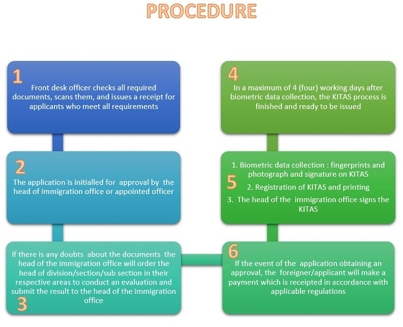
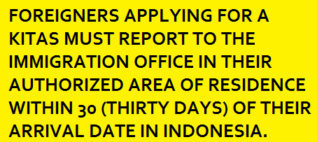
Foreigners can access the ITAS ONLINE through www.imigrasi.go.id and choose the Layanan Izin Tinggal Online icon on Online Services menu. After you fill in the application, enter your passport number and VITAS authorization number in the box provided.
After submiting your application, you will receive a notification e-mail from the immigration with your [application number], [name] and [passport number]. Please print the notification e-mail and report to the immigration office within 30 (thirty) days of your date of arrival for your interview, data verification, and biometric photograph and fingerprints.
Provide your printed notification e-mail to the immigration officer at the entry desk to get your queue number.
You must bring your original passport to get the ITAS online registration stamp and make a payment for your KITAS, re-entry permit, and information technology management system.
You will receive another notification e-mail with the ITAS approval letter and KITAS (limited stay permit card) attachments, and you can print your KITAS by yourself.
Immigration office will also provide your electronic or non-electronic KITAS for you.
Note
ITAS (izin tinggal terbatas or limited stay permit)
VITAS (visa izin tinggal terbatas or limited stay permit visa)
KITAS (kartu izin tinggal terbatas or limited stay permit card)
Limited Stay Permit/Permanent Stay Permit for mixed marriage based on nationality
Orang Asing yang berencana untuk tinggal dalam waktu yang relatif lebih lama, atau juga berencana akan melaksanakan kegiatan sebagaimana :
Bekerja, Investasi, Riset, Belajar, Penyatuan Keluarga, Repatriasi, sebagai Wisatawan Lanjut Usia Mancanegara
Dapat memilih jenis visa ini.
Untuk memperoleh jenis visa ini, Orang Asing dapat mengajukan permohonannya ke Kantor Perwakilan Republik Indonesia terdekat, atau Penjaminnya dapat mengajukan ke Direktorat Jenderal Imigrasi setelah melengkapi persyaratannya.
Jenis visa ini terbagi menjadi beberapa indeks yang setiap indeks memiliki persyaratan yang berbeda dan kegunaan yang berbeda.
Anda dapat melihat indeks visa , serta persyaratannya pada tabulasi PERSYARATAN
PASTIKAN VISA ANDA SESUAI DENGAN KEGIATAN ANDA DI INDONESIA
MELAKUKAN KEGIATAN DENGAN VISA YANG TIDAK SESUAI ADALAH DAPAT DIPIDANA SEBAGAIMANA DIATUR DALAM UNDANG-UNDANG KEIMIGRASIAN DI INDONESIA
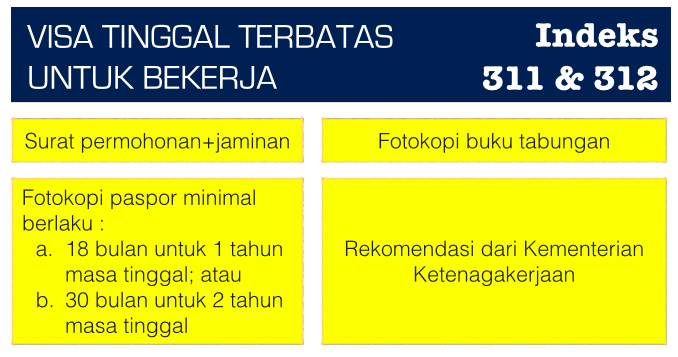
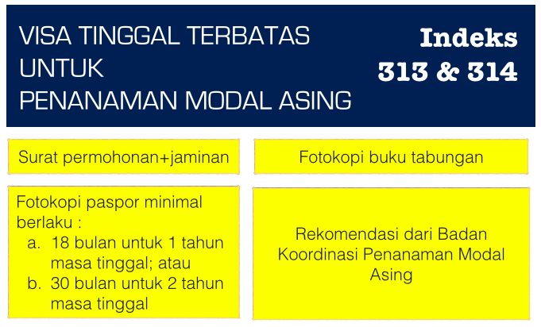
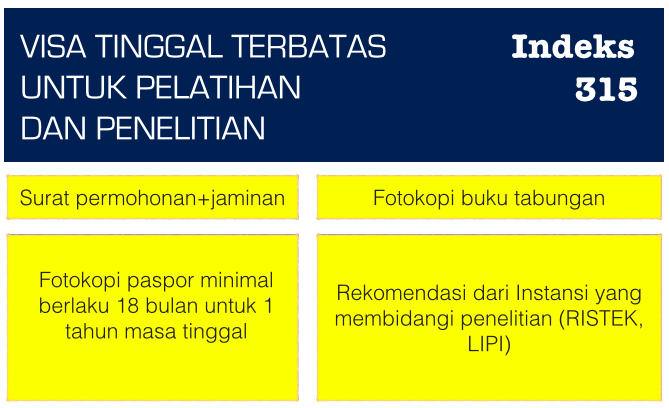
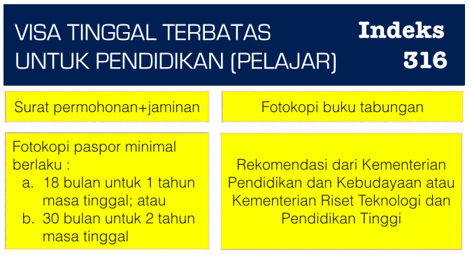
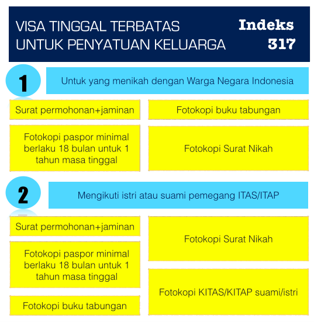
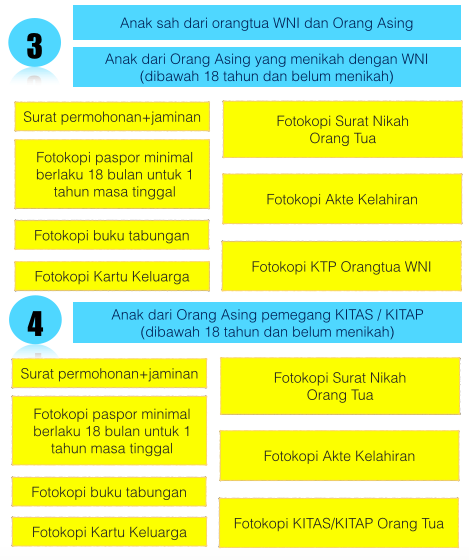
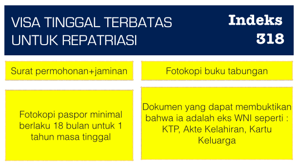
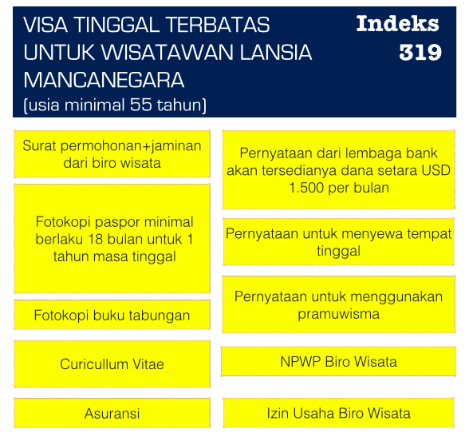
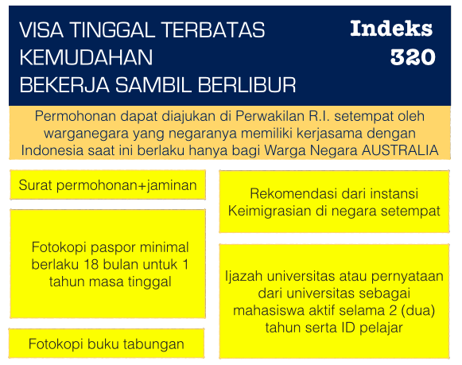
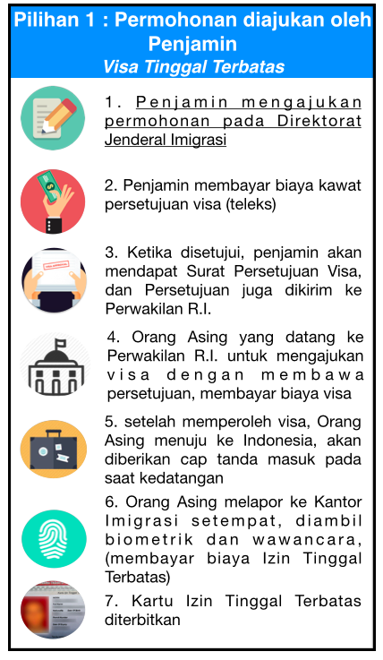
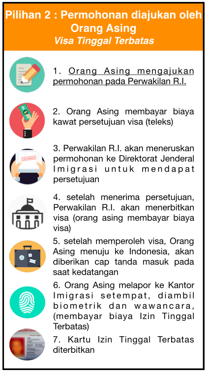
| NO | PELAYANAN KEIMIGRASIAN | BIAYA |
| Kawat Persetujuan Visa | Rp.100.000 | |
|
Visa Tinggal Terbatas
|
|
|
Dalam rangka meningkatkan hubungan negara Republik Indonesia dengan negara lain, perlu diberikan kemudahan bagi orang asing dari warganegara tertentu untuk masuk dan keluar wilayah republik indonesia yang dilaksanakan dalam bentuk pembebasan dari kewajiban memiliki visa kunjungan dengan memperhatikan asas timbal balik dan manfaat serta dapat memberikan manfaat yang lebih dalam meningkatkan perekonomian melalui kunjungan wisatawan mancanegara.
|
|
|
|
|
|
Bebas visa kunjungan diberikan izin tinggal kunjungan untuk waktu paling lama 30 (tiga puluh) hari tidak dapat diperpanjang atau dialihstatuskan menjadi izin tinggal lainnya.
Daftar Tempat Pemeriksaan Imigrasi sebagai Tempat Masuk dan Keluar wilayah Indonesia bagi orang asing yang mendapatkan Bebas Visa Kunjungan
|
|
|
|
|
|
Asia Pacific Economic Cooperation yang selanjutnya disingkat dan disebut dengan APEC, adalah organisasi Negara-negara Asia Pasifik yang didirikan di Canberra pada bulan November 1989 bertujuan membangun kerja sama ekonomi.
Saat ini APEC memiliki 21 (dua puluh satu ) anggota ekonomi yaitu : Australia, Brunai Darussalam, Kanada, Chili, Cina, Malaysia, Meksiko, Selandia Baru, Papua Nugini, Peru, Philipina, Rusia, Singapura, Taiwan, Thailand, Amerika Serikat, Vietnam, Indonesia, Hong Kong, Jepang dan Korea selatan.
Meningkatnya kegiatan Perjalanan para pebisnis dalam bidang perdagangan dan investasi negara-negara anggota APEC dengan mobilitas tinggi memerlukan efisiensi waktu dalam melakukan kegiatan tersebut oleh karenanya sangat membutuhkan kemudahan dalam proses Keimigrasian, berdasarkan pertimbangan tersebut timbul kesepakatan dan rekomendasi forum APEC untuk memberikan kemudahan kegiatan lalulintas Keimigrasian bagi pebisnis negara-negara anggota APEC dalam Skema Kartu Perjalanan Pebisnis APEC (APEC BUSINESS TRAVEL CARD / ABTC)
Selanjutnya guna mengokomodir para Pebisnis maka pada tanggal 15 Agustus 2002 di Acapulco Mexico, Indonesia telah menandatangani keikutsertaan dalam skema Kartu Perjalanan Pebisnis APEC, dan pelaksanaan pemberian KPP APEC sudah dimulai sejak 01 Mei 2004.
APEC BUSINESS TRAVEL CARD yang selanjutnya disingkat dan disebut dengan ABTC adalah Kartu Perjalanan Pebisnis yang berlaku di negara-negara anggota APECyang menerapkan skema KPP APEC sebanyak 19 negara anggota. Tujuannya adalah mempercepat proses keluar masuk ke sebuah negara bagi para pemegangnya, yakni para pelaku bisnis yang sangat mementingkan waktu, karena dengan ABTC pebisnis tidak perlu lagi mengajukan permohonan visa setiap kali ingin bepergian ke negara-negara partisipan ABTC serta mendapat fasilitas pelayanan di bandara dengan jalur khusus.
RUSIA mulai bergabung bulan Agustus 2012 dan Efektif berjalan bulan : Agustus 2013
| NO | NEGARA | BANDAR UDARA |
LAMA TINGGAL |
| 1 | AUSTRALIA | ADELAIDE, BRISBANE, CAIRNS, DARWIN, SYDNEY, MELBOURNE, PERTH | 90 HARI |
| 2 | BRUNEI DARUSSALAM |
BRUNEI INTERNATIONAL AIRPORT |
90 Hari |
| 3 | CHILI | SANTIAGO INTERNATIONAL AIRPORT | 90 HARI |
| 4 | CHINA |
BEIJING INTERNATIONAL AIRPORT, PUDONG INTERNATIONAL AIRPORT (SHANGHAI) |
60 HARI |
| 5 | HONGKONG | HONGKONG INTERNATIONAL AIRPORT | 60 HARI |
| 6 | Indonesia |
JALUR KHUSUS:
TANPA JALUR KHUSUS: BANDAR UDARA
PELABUHAN LAUT
SEKUPANG, BATU AMPAR, NONGSA,MARINA,TELUK SENIMBA.
BELAWAN.
BANDAR BINTAN TELANI, LAGOI, BANDAR SRI UDANA LOBAM
SRI BINTAN PURA
YOS SUDARSO |
|
| 7 | JEPANG | NEW TOKYO (NARITA), KANSAI (OSAKA), CENTRAL JAPAN (CENTAIR, NAGOYA) | 60 HARI |
| 8 | KOREA SELATAN |
INCHEON (SEOUL) |
90 HARI |
| 9 | MALAYSIA | KUALA LUMPUR | 60 HARI |
| 10 | MEKSIKO | 90 HARI | |
| 11 | SELANDIA BARU |
AUCKLAND, CHRISTCHUCH, WELINGTON |
90 HARI |
| 12 | PAPUA NUGINI | JACKSON | HARI |
| 13 | PERU |
JORGE CHAVEZ |
90 HARI |
| 14 | PHILIPINA | NINOY AQUINO (MANILA) | 59 HARI |
| 15 | SINGAPURA |
CHANGI (SINGAPORE) |
60 HARI |
| 16 | TAIWAN | CHIANG KAI SHEK (TAIPEI), KAOHSIUNG | 90 HARI |
| 17 | THAILAND | BANGKOK, PHUKET, CHIANG MAI | 90 HARI |
| 18 |
VIETNAM |
NOI BAI (HANOI), TAN SON NHAT (HO CHI MINH CITY) |
60 HARI |
| 19 | RUSIA mulai bergabung bulan Agustus 2012 dan Efektif berjalan bulan : Agustus 2013 | ||
Untuk memperoleh KPP APEC pemohon wajib mengisi formulir permohonan dengan melampirkan persyaratan sebagai berikut:
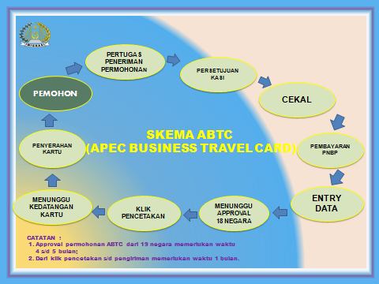
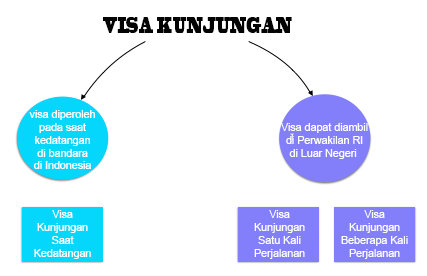
Visa kunjungan diberikan kepada Orang Asing yang akan melakukan perjalanan ke Indonesia untuk kunjungan seperti dalam rangka tugas pemerintahan, pendidikan, sosial budaya, pariwisata, bisnis, keluarga, jurnalistik, atau singgah untuk meneruskan perjalanan ke negara lain. Wisata, keluarga, sosial, seni dan budaya, tugas pemerintahan, olahraga yang tidak bersifat komersial, studi banding, kursus/pelatihan singkat, memberikan bimbingan, penyuluhan dan pelatihan dalam penerapan dan inovasi teknologi industri untuk meningkatkan mutu dan desain produk industri serta kerja sama pemasaran luar negeri bagi Indonesia, melakukan pekerjaan darurat dan mendesak, jurnalistik yang telah mendapat izin dari instansi yang berwenang, pembuatan film yang tidak bersifat komersial dan telah mendapat izin dari instansi yang berwenang, melakukan pembicaraan bisnis, melakukan pembelian barang, memberikan ceramah atau mengikuti seminar, mengikuti pameran internasional, mengikuti rapat yang diadakan dengan kantor pusat atau perwakilan di Indonesia, melakukan audit, kendali mutu produksi, atau inspeksi pada cabang perusahaan di Indonesia, calon tenaga kerja asing dalam uji coba kemampuan dalam bekerja, meneruskan perjalanan ke negara lain; dan bergabung dengan alat angkut yang berada di Wilayah Indonesia.
Visa Kunjungan Saat Kedatangan
Orang asing dapat memperoleh visa kunjungan pada saat kedatangannya di wilayah Indonesia , jika negaranya termasuk dalam daftar negara Visa Kunjungan Saat Kedatangan.
visa kunjungan saat kedatangan diberikan lama tinggal 30 (tiga puluh) hari dan dapat diperpanjang 1 (satu) kali dengan lama tinggal 30 (tiga puluh) hari.
atau
Visa Kunjungan Satu Kali Perjalanan
Orang asing dapat mengajukan visa kunjungan melalui perwakilan indonesia di Luar Negeri atau melalui penjamin di Indonesia dengan mengajukan ke Direktorat Jenderal Imigrasi di Jakarta.
Visa Kunjungan diterbitkan oleh Kedutaan Besar RI atau Konsulat Jenderal RI di Luar Negeri
Perhatian: Silahkan lihat di tab tata cara
Visa kunjungan diberikan lama tinggal 60 (enam puluh) hari, dapat diperpanjang sebanyak 4 (empat) kali dan setiap kali perpanjangan diberikan lama tinggal 30 (tiga puluh) hari.
Visa Kunjungan Beberapa Kali Perjalanan
Orang asing dapat berkunjungan beberapa kali ke wilayah indonesia hanya untuk tujuan kunjungan keluarga, bisnis dan tugas pemerintahan.
Perhatian: Silahkan lihat di tab tata cara
Visa kunjungan beberapa kali perjalanan berlaku sampai 1 (satu) tahun dengan lama kunjungan paling lama 60 (enam puluh) hari dan tidak dapat diperpanjang.
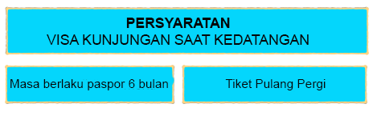
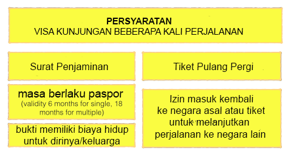
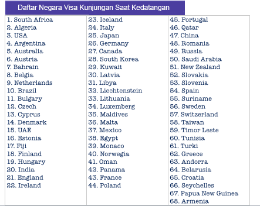